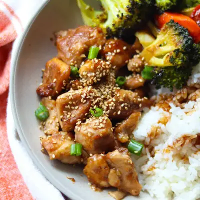

Sheet Pan Honey Sesame Chicken with Vegetables

Ingredients
- 1.5 pounds boneless, skinless chicken thighs, cut into bite-sized pieces
- 1 tbs cornstarch
- 1/2 teaspoon garlic powder
- 2 teaspoons avocado oil
- 1 large head of broccoli, cut into florets
- 2-3 medium carrots, sliced
- 1 tablespoons avocado oil
- salt and pepper
- 1/4 cup honey
- 3-4 tablespoons low sodium soy sauce
- 1 tablespoon apple cider vinegar (or rice vinegar)
- 1 tablespoon tomato paste
- 1 tablespoon sesame oil
- 2 teaspoon minced garlic
- 2 teaspoons grated fresh ginger (or 1/2 teaspoon ground ginger)
- 1 tablespoon sesame seeds
Steps
- Preheat the oven to 425°F. Line a large sheet pan with parchment paper, if you wish.
- Prep the chicken: In a bowl, toss the cubed chicken with 2 teaspoons oil, cornstarch, garlic powder, and a pinch of salt and pepper. Spread the chicken out on one half of the sheet pan.
- Prep the veggies: On the other half of the sheet pan, add the broccoli and carrots. Drizzle with oil and season with salt and pepper. Toss to coat and spread into a single layer.
- Make the sauce: In a small bowl, whisk together all sauce ingredients. Drizzle 2/3 of the sauce over the chicken and toss to coat evenly. Bake for 20 minutes, or until the chicken is fully cooked, internal temperature reaches 165°F (74°C), and veggies are tender.
- Serve as is or over rice, quinoa, or noodles for a complete meal! Drizzle the reserved sauce all over and sprinkle with sesame seeds and green onions, if using.
Recipe by Min Kwon · Kidfriendly Meals, from MJ and Hungryman. Saved here for personal use; the original has the full notes, tips and photos. Open original